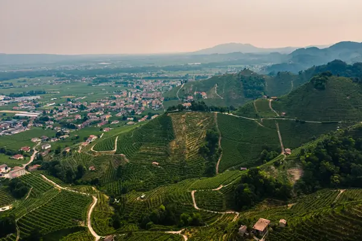

Home › Wine regions › Veneto
Veneto wine region

Photo: Alberto Caliman on Unsplash
Valpolicella, Amarone, Prosecco.
Vines grow in all 20 regions. Wines are classed DOCG, DOC and IGT.
Notable producers in Veneto
- Allegrini
- Masi
- Dal Forno Romano
- Quintarelli
- Bisol
Official appellations
| Appellation | Status | Style | Grapes |
|---|---|---|---|
| Amarone della Valpolicella (2010) Rich, dry red made from grapes dried for months after harvest (appassimento), mainly Corvina with Corvinone and Rondinella. Usually 15% alcohol or more. | DOCG | Red | Corvina |
| Delle Venezie (2017) Large inter-regional DOC for Pinot Grigio across Veneto, Friuli and Trentino. | DOC | White | Pinot Grigio |
| Asolo Prosecco (2009) From the hills of Asolo and the Montello ridge north-west of Treviso, this hillside Prosecco is at least 85% Glera. Nearly all of it is Spumante Superiore, from Brut to Demi-Sec plus a drier Extra Brut, alongside still and frizzante wines and a Brut Nature 'Sui Lieviti' re-fermented in bottle. Good to know: it became a DOCG in 2009 together with Conegliano Valdobbiadene. | DOCG | Sparkling, White | Glera |
| Bagnoli Friularo (2011) Red wines from the flat, clay-silt plain around Bagnoli di Sopra, south of Padua, made from at least 90% Raboso Piave, known locally as Friularo. Styles are Rosso (12 months), Riserva (24 months including 12 in barrel), late-harvest Vendemmia Tardiva and a Passito; a Classico sub-zone covers the commune of Bagnoli di Sopra itself. Good to know: Raboso is famously tart and tannic, so long ageing and partial drying are used to tame it; also labelled Friularo di Bagnoli. | DOCG | Red, Sweet | Raboso |
| Bardolino Superiore (2001) From morainic hills on the south-eastern shore of Lake Garda, this is a Corvina-led red with Rondinella, higher in alcohol (11.5% minimum) and lower in yield than Bardolino DOC. It cannot be released until a year after harvest, and a Classico version comes from the historic core around Bardolino. Good to know: the lake keeps the climate mild enough for olive trees, and the wine stays light, cherry-scented and peppery. | DOCG | Red | Corvina, Rondinella |
| Colli di Conegliano (2011) Still wines from the hills around Conegliano in Treviso province, the same morainic slopes that make Prosecco Superiore. The Bianco blends Manzoni Bianco with Pinot Bianco or Chardonnay; the Rosso is a Bordeaux-style blend with Marzemino, aged at least 2 years (Riserva 3, 12 months in wood). Good to know: two rare specialities live here too, Refrontolo (Marzemino, dry or passito) and the sweet white Torchiato di Fregona from dried Glera, Verdiso and Boschera. | DOCG | White, Red, Sweet | Manzoni Bianco, Pinot Blanc, Chardonnay, Cabernet Franc, Cabernet Sauvignon, Merlot, Marzemino |
| Colli Euganei Fior d'Arancio (2010) Moscato Giallo from the Euganean Hills south-west of Padua, cone-shaped volcanic hills of trachyte and marl rising out of the Po plain. At least 95% Moscato Giallo, made dry or sweet, as a sweet spumante or as a passito from dried grapes, which must age a year before release. Good to know: 'fior d'arancio' means orange blossom, the grape's signature scent; the sweet spumante is the most widely seen style. | DOCG | White, Sparkling, Sweet | Moscato Giallo |
| Conegliano Valdobbiadene Prosecco (2009) Prosecco Superiore from steep hills between Conegliano and Valdobbiadene, including Cartizze and Rive single-village wines. | DOCG | Sparkling | Glera |
| Lison (2010) Inter-regional DOCG straddling eastern Veneto and western Friuli around Portogruaro, Pramaggiore and Chions, on flat, mineral-rich alluvial clays near the Adriatic. White wine from at least 85% Tai (the former Tocai Friulano, now Friulano), with a Classico sub-zone around the historic villages of Lison and nearby hamlets. Good to know: this is the home ground of the grape's old Tocai name, and the DOCG (2010) sits inside the wider Lison Pramaggiore DOC. | DOCG | White | Friulano |
| Montello Rosso (2011) Bordeaux-style reds from the Montello, an isolated, red-clay hill on the Piave river north-west of Treviso. The blend is 40–70% Cabernet Sauvignon with Merlot, Cabernet Franc or Carmenère, aged at least 18 months (9 in oak); the Superiore needs 24 months including 12 in oak. Good to know: also labelled simply Montello; the area was once famed for the Venetian Republic's oak forests used to build its fleet. | DOCG | Red | Cabernet Sauvignon, Merlot, Cabernet Franc, Carmenère |
| Piave Malanotte (2010) Red wine from the Piave plain in Treviso and Venice provinces, on stony alluvial gravels and clays. At least 70% Raboso Piave with Raboso Veronese; a share of the grapes is air-dried to soften the grape's fierce acidity and tannin, and the wine ages at least 36 months, 12 in wood. Good to know: the name comes from the Malanotte family and the hamlet of Borgo Malanotte; it is one of Italy's most long-lived but least-known reds. | DOCG | Red | Raboso, Raboso Veronese |
| Recioto della Valpolicella (2010) The hills north of Verona, between Lake Garda and the Lessini mountains, produce this sweet red from Corvina, Corvinone and Rondinella dried for months after harvest (appassimento). It may carry Classico or Valpantena on the label, and a rare sparkling version is allowed. Good to know: Recioto is the older style; Amarone began as a Recioto that fermented out to dryness. | DOCG | Sweet, Sparkling | Corvina, Corvinone, Rondinella |
| Recioto di Gambellara (2008) Sweet white from the volcanic, basalt-rich hills of Gambellara and three neighbouring communes in Vicenza province, next door to Soave. Made from 100% Garganega, dried for months on racks or hung in bunches ('picai') before pressing, as a still Classico or a sweet spumante. Good to know: it is the Vicenza counterpart of Recioto di Soave, and the Gambellara DOC covers the dry wines and Vin Santo of the same zone. | DOCG | Sweet, Sparkling | Garganega |
| Recioto di Soave (1998) A golden sweet white from Garganega (at least 70%) dried on racks or hung in lofts over the winter, grown on the volcanic and limestone hills of the Soave zone east of Verona. Still and sparkling versions are allowed, and the best balance honeyed dried apricot with Soave's fresh acidity. Good to know: in 1998 it became the first DOCG in the Veneto. | DOCG | Sweet, Sparkling | Garganega |
| Soave Superiore (2001) Grown only on the hillsides east of Verona, on dark volcanic basalt and limestone, this is the more concentrated version of Soave, with at least 70% Garganega and the rest Trebbiano di Soave or Chardonnay. It ages at least a year before release and Riserva at least two, and the historic Classico core lies in Soave and Monteforte d'Alpone. Good to know: most top Soave is still sold as Soave Classico DOC rather than under this DOCG. | DOCG | White | Garganega |
| Arcole Plains DOC between Soave and Vicenza. | DOC | White, Red | Garganega, Merlot |
| Bagnoli di Sopra Small DOC south of Padua. | DOC | White, Red | Raboso, Friulano |
| Bardolino (1968) Light, cherry-fresh reds and Chiaretto rosé from Lake Garda's eastern shore. | DOC | Red, Rosé | Corvina, Rondinella |
| Breganze Known for Torcolato, a sweet passito from Vespaiolo. | DOC | White, Red | Vespaiolo, Cabernet Sauvignon |
| Colli Berici Hills south of Vicenza; Tai Rosso is the local Grenache. | DOC | White, Red | Tai Rosso, Merlot, Garganega |
| Colli Euganei Volcanic hills south-west of Padua. | DOC | White, Red | Merlot, Cabernet Sauvignon, Garganega |
| Corti Benedettine del Padovano Lowland DOC south of Padua. | DOC | White, Red | Raboso, Friulano |
| Custoza Fresh, fragrant white blend south-east of Lake Garda. | DOC | White | Garganega, Trebbiano, Friulano |
| Gambellara Garganega whites from volcanic soils next to Soave. | DOC | White | Garganega |
| Lessini Durello High-acid sparkling from the Durella grape in the Lessini mountains. | DOC | Sparkling | Durella |
| Lison Pramaggiore Inter-regional DOC on the Veneto-Friuli border. | DOC | White, Red | Friulano, Merlot, Refosco |
| Merlara Small DOC south-west of Padua. | DOC | White, Red | Merlot, Friulano |
| Monti Lessini Still and sparkling Durella from the Lessini hills. | DOC | White, Sparkling | Durella |
| Montello e Colli Asolani Still wines from the Montello and Asolo hills. | DOC | White, Red | Merlot, Cabernet Sauvignon |
| Piave Plains along the Piave river; home of Raboso. | DOC | Red | Raboso, Merlot, Cabernet Sauvignon |
| Prosecco (2009) Large DOC across Veneto and Friuli for Glera sparkling, including Prosecco Rosé since 2020. | DOC | Sparkling | Glera |
| Riviera del Brenta DOC between Padua and Venice. | DOC | White, Red | Merlot, Friulano |
| Soave (1968) Fresh, almond-tinged Garganega from the hills and plain east of Verona; Classico from the historic hills. | DOC | White | Garganega |
| Valpolicella (1968) Light, cherry-fruited red from the hills north of Verona. | DOC | Red | Corvina, Rondinella |
| Valpolicella Ripasso (2010) Valpolicella refermented on Amarone pomace for extra body and dried-fruit notes. | DOC | Red | Corvina, Rondinella |
| Venezia DOC covering Venice and Treviso provinces. | DOC | White, Red | Merlot, Pinot Grigio |
| Vicenza Province-wide DOC around Vicenza. | DOC | White, Red | Garganega, Merlot |
| Vigneti della Serenissima Traditional-method sparkling across the Veneto. | DOC | Sparkling | Chardonnay, Pinot Noir |
Veneto wines to try
Allegrini Amarone della Valpolicella Classico
Veneto · Amarone della Valpolicella · Corvina
Made from dried grapes: rich raisin, cherry, chocolate and spice.
Food: Braised beef, aged cheeses
Pieropan Soave Classico
Veneto · Soave Classico · Garganega
Fresh and almondy: pear, white flowers and a soft finish.
Food: Risotto, light fish
De Stefani Fallow Cuvée Rosso
Veneto · Veneto IGT · Raboso, Refosco
Easy, juicy Venetian red.
Food: Pasta, pizza
Allegrini Valpolicella
Veneto · Valpolicella · Corvina, Rondinella
Fresh, cherry-fruited Valpolicella.
Food: Pasta, charcuterie
La Collina dei Ciliegi Valpolicella Superiore Peratara
Veneto · Valpolicella Superiore · Corvina, Corvinone, Rondinella
Fuller Valpolicella from high vineyards: cherry and spice.
Food: Risotto, pork
Meroni Amarone della Valpolicella Classico Velluto
Veneto · Amarone della Valpolicella · Corvina, Rondinella
Mature Amarone: dried fruit, chocolate and spice.
Food: Aged cheese, braised meats
Tommasi Valpolicella Ripasso
Veneto · Valpolicella Ripasso · Corvina, Rondinella
Ripasso: richer Valpolicella with dried cherry notes.
Food: Lasagne, beef
Musella Recioto della Valpolicella
Veneto · Recioto della Valpolicella · Corvina, Rondinella
Sweet red from dried grapes: cherry, chocolate and spice.
Food: Chocolate desserts
Spirits from Veneto
More wine regions in Italy
The Wine Reference newsletter
New wines, stories and career guides, one email a week at most.
Over 18s only. Unsubscribe any time with one click. Your email is stored securely by Kit and never shared.
Support The Wine Reference
This guide is free, with no paywall. If it helped you choose a bottle, you can buy me a glass and keep it growing.
🍷 Buy me a glass